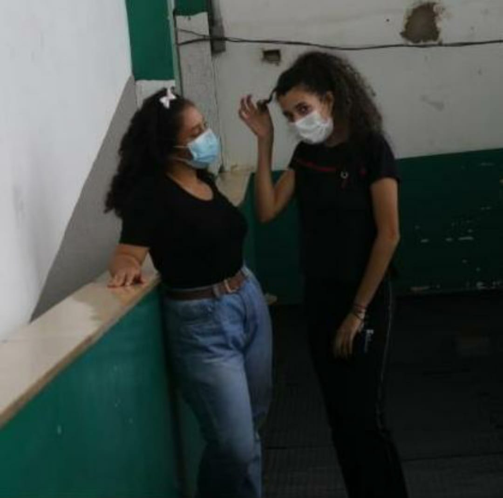

Oi Gabi, se eu não coloquei uma imagem nossa é porque agentem não tem uma só da gente. Então eu vou colocar duas imagens que mais me marcaram, e nesse dia eu pude pela primeira vez segurar uma camera profissional, e um dos meu sonhos quando eu era criança era ser um fotografo.
E sei que você veio do interior porem eu sou pessoa bem simples, e talvez não pareça mas eu sou bem serio e queto por isso nunca liguei para você ter vindo interior, e na verdade eu nunca me importei porque eu via você como uma pessoa comum.

OI Gabi, aqui é o verdadeiro gui, não vou fingir mais oque sinto, eu sou uma pessoa muito reservada, e muitas vezes eu não desisto daquilo que quero, porem andei desistndo de muitas coisa, mas eu nunca vou desistir de você, o motivo eu não sei bem porque eu só não consigo algo me faz querer continuar lutando cada vez mais e mais.
Gabi eu sou uma pessoa que não sai de casa, fica o dia inteiro dentro do quarto estudando ou lendo algo que me intereça. A muito tempo eu não gostava e acho que ainda não gosto de ficar mechendo no whatsapp, porem toda vez que eu leio uma mensagem que você manda eu fico muito feliz mas muito ancioso para chegar outra mensagem sua, quando eu vi uma vez uma foto sua junto com o lucas, cadu e a sua irmã, eu queria muito convidar você para sair um dia porem eu não tinha dinheiro e nisso eu pensei em entrar na monutoria, porem quando eu entrei eu, eu tive a tragica noticia que você tinha ficado doente com o covid-19, nessa hora você não sabe como o meu coração sauto do quanto eu estava preocupado com você, eu não queria que nada acontecesse com você, eu fiquei comedo de perder você, porque eu tambem não sei muito bem.
E vou contar uma coisa que não contei para niguem, toda vez que eu ia falar com a minha irmã ou minha mãe eu falava sobre você até minha irmã ficou com ciumes de mim porem eu acho que não falava sempre, mas minha irmã estava bem cansada de escutar o nome Gabriela, mas eu não conseguia me segurar porque eu chegava super feliz por que eu pudodia me encontrar com você, falar com você, ver você ou o principal que era eu poderia ter o seu abraço só para mim, porém quando eu soube de uma noticia no IF que tinha pessoas da minha sala falando que eu estava cometendo asedios com elas, eu fiquei preocupado porque isso poderia afetar você e se isso acontecesse eu não agentaria ver isso acontecendo, então eu decidi me afastar para não ter mais problemas.
Depois e consegui voltar a falar com você porem com um pouco de preocupação, mas depois eu fui vendo que isso não importava e eu tinha conversado com a pessoa que supostamente fez os comentarios, entre tento eu não conseguia ficar muito de boa porque o Thassyo falou que daria conselhos, e os conselhos deles não fazian muito sentido, porem eu seguia, e teve um momento que eu meio que travei sera que eu abraço ela ou sera eu falo com ela, sera que ta certo oque eu fasso, e na verdade era só eu ter conversado com você porque acima de todos do IF você, era a pessoa que eu tinha mais intimidade, e foi você que me apresentou os seus amigos, foi você que medeu lembranças incriveis, foi você que me fez sair da solidão, você me fez ser incluso em seu grupo, eu só tenho a agradecer por eu ter conhecido você, você foi a minha felicidade por muito tempo.
Eu percebi que eu não poderia ficar sem você junho, e nisso eu pedi por realizar um sonho, porem eu sonho alto de mais, e ainda tenho esse sonho e esse objetivo, mas agora me resta só ter Fé em Deus, mesmo doendo escutar o nome Otávio, mas eu aturo, porque eu ligo muito para sua felicidade, e as vezes eu coloco o meu orgulho de machista( de modo figurado) de lado para ver o seu sorriso e seus olhos brilharem, e vou contar que dói, dói muito fingir que está tudo bem porque não está, e hoje ( 16/07/2022 ás 23:37) sabe eu não sei se o Thassyo faz as vezes por querer porem ele sabe que eu sou maluco por você, mas ele conta momento seu e do Otavio, isso me deixa furioso, porem o bom é que um buraco cada vez maior no peito vai crecendo e vai crecendo um escudo cada vez maior mas sabe esse escudo se rompeu de uma forma surpriendente quando eu vi você no evento que teve, eu fique fraco mas eu tentei permanecer forte porem não aguentei e descupe eu falei para todo mundo que conheço que tinha visto uma anja linda, todo mundo ficou não entendendo nada mas depois que eu fui me acalmar.
E descupe eu não quero fazer esse site para você mostrando oque sinto contra uma pessoa que nunca vi na minha vida, porem dói, descupe eu vou continuar outro dia porque comessou a ficar dificil (fim as 23:42).
descupe por isso mas tá , eu vou continuar.
Bom Gabriela eu sei que você é te muita vergonha mas você é muito linda e tomara que um dia você consiga mostrar ela ao mundo, mas você é muito especial para todos, e a melhor qualidades que você te é ser carinhsa, mandandona, chata, amorosa, as vezes um pouco irritante, mas o princiapal companheira.
Um dia prometi falar para você quais sãos defeitos que vejo em você, e a ora chegou porque eu não sei se você vai ficar por muito tempo perto de mim então. A parte que eu acho que você tem mais fragilidade é o seu coração, e seus traumas, Gabi você um da vai ter que enfrentar eles, mesmo sendo dificil mas sei que você é forte, e muito forte para passar por cima.
Agora não é um defeito mas um problema que é as sua qualidades, as suas qualidades é muito demais porem as vezes chatas porque va tornado a outra pessoa um pouco dependente de você, por exemplo quando uma pessoa passa mal você tenta ajudar de alguma forma e sempre tenta fazer o outro feliz, alem de ser carinhosa, intrigante, respeitosa, empatica.
Outro defeito seria você ser muito abertas para pessoas ao seu redor, isso pode se tornar um perigo, principalmente para o seu coração, se deixar todos entrarem, todo momento você ira se machucar, mas não quer dizer para você criar um muro gigante ou um escudo blindado nele porque isso nunca vai adiantar porque eu conhesso você e sei que se uma pessoa que entrar no seu coração você vai amala muito e talvez um dia você acabar se machucando muito, até você conseguir achar outro apoio para ocupar aquele lugar tipo um subistituto.
Tambem tem os seu olhos, as vezes eles são assutadores e dão um medo, quando está brava, você comessa a deixar os outros com raivas de você, e tambem muito chata como aquele dia que teve um evento de rap eu vi que você estava com raiva de mim e aquilo me irritou e deu vontade de gritar com você até acabei gritando sem pensar direito mas a sorte que vc estava longe.
Mas ainda você continua sendo a melhor e mais linda gata que já coneci.
obs:
Se tivesse dado serto entre eu e você, você seria a minha primeira namorada e não a segunda, e eu seria o cara mais soirtudo do mundo tipo assim eu seira o cara, sabe oque é ser o cara, se conseguiu imaginar, viu o cara certo.
Mas serio você seria a primeira, parece mentira mas é verdade.
ps:
No dia que te conheci eu senti algo estranho porque parecia que eu te conhecia de algum lugar, e quando você mostrou a sua mãe quando você era bebê me pareceu que eu já tinha visto a sua mãe em algum lugar da minha vida, ou aquela mesma foto não sei na onde e sei que é estranho.
Essei que esse texto é muito longo e deve ter um monte de erros mas acho que to demorando de mais para te entregar isso.
E Gabriela sepre que pressisar de alguma coisa ou estiver em panico me chama, como ve se preoupa comigo eu me preocupo cm você, e sepre que precisar pode contar comigo, até se estiver com raiva, triste, no fundo do posso pode me procurar porque eu não vou pensar duas vezes em te ajudar de um modo ou de outro. E eu sei que pareço que não sei guardar segredo porem as coisas que você conta para mim eu nunca contei e ou contar para ninguem porque eu sei que isso é importante para você e não quero que nada de errado atrapalhe você.